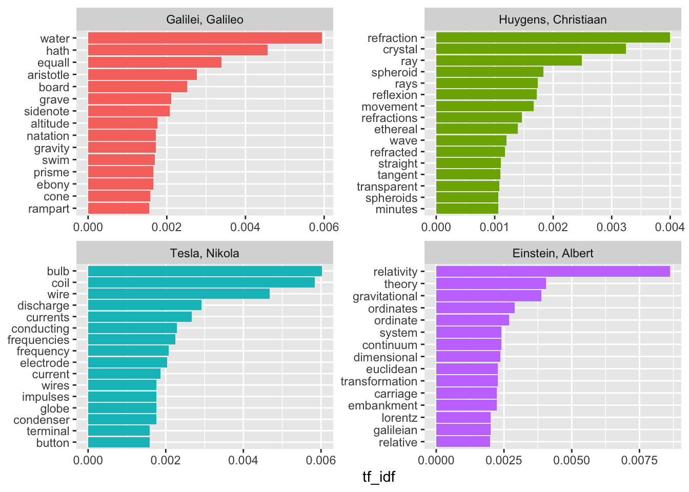

This page documents my completion of the practice examples in the Tidy Text Mining. In addition, this document itself shows my learning and skill development with R.
Tidy text format is defined as “a table with one-token-per-row” where a token is a “meaningful unit of text, such as a word” used for analysis. To tokenize is to split text into tokens. Tidy text mining typically uses single word tokens. Other methods of storying text for analysis include n-grams, sentences, and paragraphs. Using tidy text data, or one-token-per-row/one-word-per-row, allows us to use many “tidy” R tools and packages.
Other text mining approaches to storing text:
Converting text into a tidy text dataset.
%>% into unnest_tokens() function and specify (output, input) within the function,Below is a poem shown as a character vector:
text <- c("Because I could not stop for Death -",
"He kindly stopped for me -",
"The Carriage held but just Ourselves -",
"and Immortality")
text## [1] "Because I could not stop for Death -"
## [2] "He kindly stopped for me -"
## [3] "The Carriage held but just Ourselves -"
## [4] "and Immortality"Here we see the text in quotation marks and separated by commas. We’ve concatenated it with c() and assigned the data as text with <- operator.
Now, we need to put it into a data frame:
## Make sure `library(dplyr)` is loaded. `tibble()` is a tool in `dplyr`. `tibble` does not convert strings to factors and does not use row names, important for tidy tools.
text_df <- tibble(line = 1:4, text = text)
text_df## # A tibble: 4 x 2
## line text
## <int> <chr>
## 1 1 Because I could not stop for Death -
## 2 2 He kindly stopped for me -
## 3 3 The Carriage held but just Ourselves -
## 4 4 and ImmortalityHere we see the data in a data frame, but the text is not in the tidy text format of one-token-per-document-per-row. We need to tokenize it!
## Make sure library(tidytext) is loaded.
text_df %>%
unnest_tokens(word, text)## # A tibble: 20 x 2
## line word
## <int> <chr>
## 1 1 because
## 2 1 i
## 3 1 could
## 4 1 not
## 5 1 stop
## 6 1 for
## 7 1 death
## 8 2 he
## 9 2 kindly
## 10 2 stopped
## 11 2 for
## 12 2 me
## 13 3 the
## 14 3 carriage
## 15 3 held
## 16 3 but
## 17 3 just
## 18 3 ourselves
## 19 4 and
## 20 4 immortalityThe basic arguments in unnest_tokens() are the output (word) and the input (text, a column from text_df). This is reading in text column and unnesting the data by each word. We also see that unnest_tokens() includes a column with line for the line where each word occurs.
unnest_tokens() will convert the text/tokens to lowercase. To prevent this, feed in to_lower = FALSE arguement:
text_df %>%
unnest_tokens(word, text, to_lower = FALSE)## # A tibble: 20 x 2
## line word
## <int> <chr>
## 1 1 Because
## 2 1 I
## 3 1 could
## 4 1 not
## 5 1 stop
## 6 1 for
## 7 1 Death
## 8 2 He
## 9 2 kindly
## 10 2 stopped
## 11 2 for
## 12 2 me
## 13 3 The
## 14 3 Carriage
## 15 3 held
## 16 3 but
## 17 3 just
## 18 3 Ourselves
## 19 4 and
## 20 4 ImmortalityClicking on janeaustenr in the Packages tab will display documentation for the package. For janeaustenr, this includes the various dataframes and the texts. The package has six novels where the text data is saved in a one-row-per-line format where a line is the literal printed line in a physical book. If we View(emma) we see the book Emma has been broken down line-by-line in one column. View(austen_books) shows two columns, one labeled text and the other book. text is again broken down line-by-line and and book holds the title of the book where that line is found. Also, we see rows with chapter numbers.
Since we want to tidy the data word-by-word, it would be useful create a new data frame that also includes columns as to where each word is found by line number and chapter. To do this, we will use group_by(), mutate(), and finally ungroup():
## load `janeaustenr`, `dplyr`, and `stringr` packages
original_books <- austen_books() %>%
group_by(book) %>%
mutate(linenumber = row_number(),
chapter = cumsum(str_detect(text, regex("^chapter [\\divxlc]",
ignore_case = TRUE)))) %>%
ungroup()
original_books## # A tibble: 73,422 x 4
## text book linenumber chapter
## <chr> <fct> <int> <int>
## 1 SENSE AND SENSIBILITY Sense & Sensibility 1 0
## 2 "" Sense & Sensibility 2 0
## 3 by Jane Austen Sense & Sensibility 3 0
## 4 "" Sense & Sensibility 4 0
## 5 (1811) Sense & Sensibility 5 0
## 6 "" Sense & Sensibility 6 0
## 7 "" Sense & Sensibility 7 0
## 8 "" Sense & Sensibility 8 0
## 9 "" Sense & Sensibility 9 0
## 10 CHAPTER 1 Sense & Sensibility 10 1
## # … with 73,412 more rowsHere we have the data frame original_books which includes all the data from austen_books but also adds linenumber and chapter as columns.
Next, we nee to tokenize the text in a one-token-per-row format with unnest_tokens():
tidy_books <- original_books %>%
unnest_tokens(word, text)
tidy_books## # A tibble: 725,055 x 4
## book linenumber chapter word
## <fct> <int> <int> <chr>
## 1 Sense & Sensibility 1 0 sense
## 2 Sense & Sensibility 1 0 and
## 3 Sense & Sensibility 1 0 sensibility
## 4 Sense & Sensibility 3 0 by
## 5 Sense & Sensibility 3 0 jane
## 6 Sense & Sensibility 3 0 austen
## 7 Sense & Sensibility 5 0 1811
## 8 Sense & Sensibility 10 1 chapter
## 9 Sense & Sensibility 10 1 1
## 10 Sense & Sensibility 13 1 the
## # … with 725,045 more rowsNow the data is in the tidy text data format.
We’ll notice that on observation 10, the word “the” is present. The word “the” is considered a stop word, a word (such as of, to, a) typically not useful for analysis. View(stop_words) will show the list of stop words by lexicon. To remove the stop words, we can use anti_join(). To use only one particular lexicon, we can add filter().
data(stop_words)
tidy_books2 <- tidy_books %>%
anti_join(stop_words)
tidy_books2## # A tibble: 217,609 x 4
## book linenumber chapter word
## <fct> <int> <int> <chr>
## 1 Sense & Sensibility 1 0 sense
## 2 Sense & Sensibility 1 0 sensibility
## 3 Sense & Sensibility 3 0 jane
## 4 Sense & Sensibility 3 0 austen
## 5 Sense & Sensibility 5 0 1811
## 6 Sense & Sensibility 10 1 chapter
## 7 Sense & Sensibility 10 1 1
## 8 Sense & Sensibility 13 1 family
## 9 Sense & Sensibility 13 1 dashwood
## 10 Sense & Sensibility 13 1 settled
## # … with 217,599 more rows## To filter:
## stop_words_onix <- stop_words %>%
## filter(lexicon == "onix")
## replace anti_join(stop_words) with: anti_join(stop_words_onix)To find the most common words, we can use dplyr’s count():
tidy_books2 %>%
count(word, sort = TRUE)## # A tibble: 13,914 x 2
## word n
## <chr> <int>
## 1 miss 1855
## 2 time 1337
## 3 fanny 862
## 4 dear 822
## 5 lady 817
## 6 sir 806
## 7 day 797
## 8 emma 787
## 9 sister 727
## 10 house 699
## # … with 13,904 more rowsWith the text data in the tidy format, we can create visualizations using ggplot2. Here we have a plot with the most frequent words:
tidy_books2 %>%
count(word, sort = TRUE) %>%
filter(n > 600) %>%
mutate(word = reorder(word,n)) %>%
ggplot(aes(word, n)) +
geom_col() +
xlab(NULL) +
coord_flip()The gutenbergr package can pull public domain works from the Project Gutenberg collection. The gutenberg_download() function can pull works by their Project Gutenberg ID. The package also has functions that can look at metadata, taking out unhelpful header/footer data, and look at information about authors.
gutenberg_metadata contains information about each work in the collection, such as the ID number of each work, the author, and which language it is in. To find texts we can use a variety of methods:
gutenberg_metadata %>%
filter(author == "Wells, H. G. (Herbert George)")## # A tibble: 81 x 8
## gutenberg_id title author gutenberg_autho… language gutenberg_books…
## <int> <chr> <chr> <int> <chr> <chr>
## 1 35 The … Wells… 30 en Science Fiction…
## 2 36 The … Wells… 30 en Movie Books/Sci…
## 3 159 The … Wells… 30 en Best Books Ever…
## 4 456 The … Wells… 30 en Science Fiction
## 5 524 Ann … Wells… 30 en <NA>
## 6 718 Tono… Wells… 30 en Best Books Ever…
## 7 775 When… Wells… 30 en Science Fiction
## 8 780 The … Wells… 30 en <NA>
## 9 1013 The … Wells… 30 en Science Fiction…
## 10 1046 God,… Wells… 30 en Bestsellers, Am…
## # … with 71 more rows, and 2 more variables: rights <chr>, has_text <lgl>gutenberg_metadata %>%
filter(title == "The Time Machine")## # A tibble: 3 x 8
## gutenberg_id title author gutenberg_autho… language gutenberg_books…
## <int> <chr> <chr> <int> <chr> <chr>
## 1 35 The … Wells… 30 en Science Fiction…
## 2 6620 The … Wells… 30 en Movie Books/Sci…
## 3 17401 The … Wells… 30 en Movie Books
## # … with 2 more variables: rights <chr>, has_text <lgl>Let’s download the texts for H. G. Wells’ books The Time Machine, The War of the Worlds, The Invisible Man, and The Island of Doctor Moreau.
if(!file.exists("hgwells.rds")){
hgwells <- gutenberg_download(c(35, 36, 5230, 159))
write_rds(hgwells, "hgwells.rds")
} else{
hgwells <- read_rds("hgwells.rds")
}Next, we’ll need to tidy the data:
tidy_hgwells <- hgwells %>%
unnest_tokens(word, text) %>%
anti_join(stop_words)What are the most common words in these novels?
tidy_hgwells %>%
count(word, sort = TRUE)## # A tibble: 11,769 x 2
## word n
## <chr> <int>
## 1 time 454
## 2 people 302
## 3 door 260
## 4 heard 249
## 5 black 232
## 6 stood 229
## 7 white 222
## 8 hand 218
## 9 kemp 213
## 10 eyes 210
## # … with 11,759 more rowsNext, we’ll look at some works from the Brontë sisters: Jane Eyre, Wuthering Heights, The Tenant of Wildfell Hall, Villette, and Agnes Grey.
bronte <- gutenberg_download(c(1260, 768, 969, 9182, 767))## Determining mirror for Project Gutenberg from http://www.gutenberg.org/robot/harvest## Using mirror http://aleph.gutenberg.orgThen we’ll tidy them:
tidy_bronte <- bronte %>%
unnest_tokens(word, text) %>%
anti_join(stop_words)An now we’ll look at the most common words:
tidy_bronte %>%
count(word, sort = TRUE)## # A tibble: 23,050 x 2
## word n
## <chr> <int>
## 1 time 1065
## 2 miss 855
## 3 day 827
## 4 hand 768
## 5 eyes 713
## 6 night 647
## 7 heart 638
## 8 looked 601
## 9 door 592
## 10 half 586
## # … with 23,040 more rowsNext, let’s look at these three collections together. We’ll calculate the fequency for each word in the three collections by binding the data frames together. We’ll use spread and gather to reshape the dataframe so we can plot it.
frequency <- bind_rows(mutate(tidy_books2, author = "Jane Austen"),
mutate(tidy_hgwells, author = "H. G. Wells"),
mutate(tidy_bronte, author = "Brontë Sisters")) %>%
mutate(word = str_extract(word, "[a-z']+")) %>%
count(author, word) %>%
group_by(author) %>%
mutate(proportion = n / sum(n)) %>%
select(-n) %>%
spread(author, proportion) %>%
gather(author, proportion, `Brontë Sisters`:`H. G. Wells`)We used str_extract() because the code from Project Gutenberg includes underscores to indicate emphasis such as italics. We want something like “by” to be counted the same as “by” instead of a whole other word.
Next, we’ll plot:
ggplot(frequency,
aes(x = proportion,
y = `Jane Austen`, color = abs(`Jane Austen` - proportion))) +
geom_abline(color = "gray40", lty = 2) +
geom_jitter(alpha = 0.1, size = 2.5, width = 0.3, height = 0.3) +
geom_text(aes(label = word), check_overlap = TRUE, vjust = 1.5) +
scale_x_log10(labels = percent_format()) +
scale_y_log10(labels = percent_format()) +
scale_color_gradient(limits = c(0, 0.001), low = "darkslategray4", high = "gray75") +
facet_wrap(~author, ncol = 2) +
theme(legend.position = "none") +
labs(y = "Jane Austen", x = NULL)This plot compares Austen’s books to the Brontë Sisters and H. G. Wells. Words closer to the dashed line have simliar frequencies. Words further above the line are more often found in Austen’s works. We see that Austen and the Brontë Sisters had closer frequencies of words than did Austen and H. G. Wells.
Next, we’ll use a correlation test to see how similar or different these sets of word frequencies are.
cor.test(data = frequency[frequency$author == "Brontë Sisters",],
~ proportion + `Jane Austen`)##
## Pearson's product-moment correlation
##
## data: proportion and Jane Austen
## t = 119.65, df = 10404, p-value < 2.2e-16
## alternative hypothesis: true correlation is not equal to 0
## 95 percent confidence interval:
## 0.7527869 0.7689642
## sample estimates:
## cor
## 0.7609938cor.test(data = frequency[frequency$author == "H. G. Wells",],
~ proportion + `Jane Austen`)##
## Pearson's product-moment correlation
##
## data: proportion and Jane Austen
## t = 36.441, df = 6053, p-value < 2.2e-16
## alternative hypothesis: true correlation is not equal to 0
## 95 percent confidence interval:
## 0.4032800 0.4445987
## sample estimates:
## cor
## 0.4241601Here we see that yes, there is more correlation between Austen’s and the Brontë Sisters’ works than between Austen’s and Wells’ works.
Sentiment analysis can look at individual words or the over sentiment of an entire work. There are many sentiment lexicons that look for positive/negative sentiment and also possibly emotions such as joy, anger, sadness, and so on. The tidytext package includes several lexicons including AFINN, bing, and nrc.
To download these lexicons, we’ll use get_sentiments("") and selection 1.
sentiments_afinn <- get_sentiments("afinn")
sentiments_bing <- get_sentiments("bing")
sentiments_nrc <- get_sentiments("nrc")Using inner_join for sentiment analysis is similar to using anti_join. To answer the question what are the most common joy words in Emma, we’ll use `unnest_tokens()" again.
tidy_books3 <- austen_books() %>%
group_by(book) %>%
mutate(linenumber = row_number(),
chapter = cumsum(str_detect(text, regex("^chapter [\\divxlc]",
ignore_case = TRUE)))) %>%
ungroup() %>%
unnest_tokens(word, text)The output argument in unnest_tokens() is word. This is useful because the sentiment lexicons and the stop words datasets also have columns named word, thus making it easier to do inner and anti joins.
Now that the data is tidy, let’s filter() the nrc lexicon for joy and join it with tidy_books3 filtering for Emma.
nrc_joy <- sentiments_nrc %>%
filter(sentiment == "joy")
tidy_books3 %>%
filter(book == "Emma") %>%
inner_join(nrc_joy) %>%
count(word, sort = TRUE)## # A tibble: 303 x 2
## word n
## <chr> <int>
## 1 good 359
## 2 young 192
## 3 friend 166
## 4 hope 143
## 5 happy 125
## 6 love 117
## 7 deal 92
## 8 found 92
## 9 present 89
## 10 kind 82
## # … with 293 more rowsHere we see a list of the most common “joy” words in the book Emma.
We can also look at sentiment changes over the course of a novel by defining chunks of text. Using too small of a chunk can lead to not having enough data to get a good idea of the sentiment while having too large of a chunk can water down the sentiment. It depends on each individual text. For this, we’ll use 80 lines. We’ll use spread() to create separate columns for negative and positive sentiment. We’ll also calculate net sentiment.
austen_sentiment80 <- tidy_books %>%
inner_join(sentiments_bing) %>%
count(book, index = linenumber %/% 80, sentiment) %>%
spread(sentiment, n, fill = 0) %>%
mutate(sentiment = positive - negative)This gives us a data frame with the title of the book, and index number for the chunk of text we’re looking at, the total negative and total positive words, and the net sentiment between the two.
Now we can plot austen_sentiment80 with index on the x axis to show sentiment across the narrative timeline of each book. Since each book is a different length, we’ll use scales = "free_x" in facet_wrap() to make the plots uniformly sized.
ggplot(austen_sentiment80,
aes(index, sentiment, fill = book)) +
geom_col(show.legend = FALSE) +
facet_wrap(~book, ncol = 2, scales = "free_x")Having read a few of the books plotted, I have a good guess at what is going on in the plot when there are sudden changes in the net sentiment between chunks.
Some sentiment lexicons are more appropriate for some questions than others. Sometimes they’re tailor made for certain purposes or they’re made by people from a particular field to suite that field. Because of this, it can be useful to compare lexicons. Let’s look at the book Pride & Prejudice with three different lexicons.
pride_prejudice <- tidy_books %>%
filter(book == "Pride & Prejudice")
pride_prejudice## # A tibble: 122,204 x 4
## book linenumber chapter word
## <fct> <int> <int> <chr>
## 1 Pride & Prejudice 1 0 pride
## 2 Pride & Prejudice 1 0 and
## 3 Pride & Prejudice 1 0 prejudice
## 4 Pride & Prejudice 3 0 by
## 5 Pride & Prejudice 3 0 jane
## 6 Pride & Prejudice 3 0 austen
## 7 Pride & Prejudice 7 1 chapter
## 8 Pride & Prejudice 7 1 1
## 9 Pride & Prejudice 10 1 it
## 10 Pride & Prejudice 10 1 is
## # … with 122,194 more rowsNow that we have the book isolated, we’ll inner_join it with the lexicons. However, AFINN uses scores rather than positive/negative, so we’ll need to treat that one separately.
pp_afinn <- pride_prejudice %>%
inner_join(sentiments_afinn) %>%
group_by(index = linenumber %/% 80) %>%
summarise(sentiment = sum(value)) %>%
mutate(method = "AFINN")
pp_bing_nrc <- bind_rows(pride_prejudice %>%
inner_join(sentiments_bing) %>%
mutate(method = "Bing et al."),
pride_prejudice %>%
inner_join(sentiments_nrc %>%
filter(sentiment %in% c("positive", "negative"))) %>%
mutate(method = "NRC")) %>%
count(method, index = linenumber %/% 80, sentiment) %>%
spread(sentiment, n, fill = 0) %>%
mutate(sentiment = positive - negative)Here we have the sentiment scores for each chunck of Pride & Prejudice in two data frames named pp_afinn and pp_bing_nrc.
Now to plot them:
bind_rows(pp_afinn, pp_bing_nrc) %>%
ggplot(aes(index, sentiment, fill = method)) +
geom_col(show.legend = FALSE) +
facet_wrap(~method, ncol=1)There are definite differences in the plots above, but they all follow the same general flow. The AFINN lexicon has higher highs, the NRC lexicon has very few negatives, and the Bing et al. lexicon tends to stay closer to 0. This shows us that each lexicon is unique. Let’s take a look at the lexicons themselves.
Let’s look at the number of negative and positive words in NRC and Bing et al.:
sentiments_nrc %>%
filter(sentiment %in% c("positive",
"negative")) %>%
count(sentiment)## # A tibble: 2 x 2
## sentiment n
## <chr> <int>
## 1 negative 3324
## 2 positive 2312sentiments_bing %>%
count(sentiment)## # A tibble: 2 x 2
## sentiment n
## <chr> <int>
## 1 negative 4781
## 2 positive 2005It looks like NRC has about a thousand more negative sentiment words than positive sentiment words. Bing et al. has 2776 more negative words than positive words. This could be making a difference in the Pride & Prejudice plots above.
Linking the texts with sentiments allows us to look at the most commong positive and negative words are. Let’s look at Austen’s works using the Bing et al. lexicon.
bing_word_counts <- tidy_books %>%
inner_join(sentiments_bing) %>%
count(word, sentiment, sort = TRUE) %>%
ungroup()
bing_word_counts## # A tibble: 2,585 x 3
## word sentiment n
## <chr> <chr> <int>
## 1 miss negative 1855
## 2 well positive 1523
## 3 good positive 1380
## 4 great positive 981
## 5 like positive 725
## 6 better positive 639
## 7 enough positive 613
## 8 happy positive 534
## 9 love positive 495
## 10 pleasure positive 462
## # … with 2,575 more rowsbing_word_counts %>%
group_by(sentiment) %>%
top_n(10) %>%
ungroup() %>%
mutate(word = reorder(word, n)) %>%
ggplot(aes(word, n, fill = sentiment)) +
geom_col(show.legend = FALSE) +
facet_wrap(~sentiment, scales = "free_y") +
labs(y="contribution to sentiment",
x= NULL) +
coord_flip()Oh no! The word “miss” is marked as negative, as in “miss the mark” or “I miss my dog” when likely Austen used it as a title for characters such as “Hello Miss Emma”. We can add the word “miss” to a set of custom stop words.
custom_stop_words <- bind_rows(tibble(word = c("miss"), lexicon = c("custom")),
stop_words)
custom_stop_words## # A tibble: 1,150 x 2
## word lexicon
## <chr> <chr>
## 1 miss custom
## 2 a SMART
## 3 a's SMART
## 4 able SMART
## 5 about SMART
## 6 above SMART
## 7 according SMART
## 8 accordingly SMART
## 9 across SMART
## 10 actually SMART
## # … with 1,140 more rowsNow let’s plot number of positive and negative words without stop words:
bing_word_counts <- tidy_books %>%
anti_join(custom_stop_words) %>%
inner_join(sentiments_bing) %>%
count(word, sentiment, sort = TRUE) %>%
ungroup()
bing_word_counts## # A tibble: 2,554 x 3
## word sentiment n
## <chr> <chr> <int>
## 1 happy positive 534
## 2 love positive 495
## 3 pleasure positive 462
## 4 poor negative 424
## 5 happiness positive 369
## 6 comfort positive 292
## 7 doubt negative 281
## 8 affection positive 272
## 9 perfectly positive 271
## 10 glad positive 263
## # … with 2,544 more rowsbing_word_counts %>%
group_by(sentiment) %>%
top_n(10) %>%
ungroup() %>%
mutate(word = reorder(word, n)) %>%
ggplot(aes(word, n, fill = sentiment)) +
geom_col(show.legend = FALSE) +
facet_wrap(~sentiment, scales = "free_y") +
labs(y="contribution to sentiment",
x= NULL) +
coord_flip()The tidy text format works well for ggplot2, but it also works well for wordclouds. Let’s try it:
tidy_books %>%
anti_join(stop_words) %>%
count(word) %>%
with(wordcloud(word, n, max.words = 100))To do a comparison.cloud() we need to reshape the data frame to a matrix with acast().
tidy_books %>%
inner_join(sentiments_bing) %>%
count(word, sentiment, sort = TRUE) %>%
acast(word ~ sentiment, value.var = "n", fill = 0) %>%
comparison.cloud(colors = c("gray20", "gray80"),
max.words = 100)Looking at singular words is useful, but there are times when looking at an entire sentence is more useful. Let’s look at one:
pp_sentences <- tibble(text = prideprejudice) %>%
unnest_tokens(sentence, text, token = "sentences")
pp_sentences$sentence[2]## [1] "however little known the feelings or views of such a man may be on his first entering a neighbourhood, this truth is so well fixed in the minds of the surrounding families, that he is considered the rightful property of some one or other of their daughters."Sentence tokenizing doesn’t always work well with dialogue. Using iconv() for example iconv(text, to = 'latin1') in a mutate function before unnesting might be helpful. Another option is to use the regex pattern in unnest_tokens().
austen_chapters <- austen_books() %>%
group_by(book) %>%
unnest_tokens(chapter, text, token = "regex",
pattern = "Chapter|CHAPTER [\\dIVXLC]") %>%
ungroup()
austen_chapters %>%
group_by(book) %>%
summarise(chapters = n())## # A tibble: 6 x 2
## book chapters
## <fct> <int>
## 1 Sense & Sensibility 51
## 2 Pride & Prejudice 62
## 3 Mansfield Park 49
## 4 Emma 56
## 5 Northanger Abbey 32
## 6 Persuasion 25Let’s find the most negative chapters in each of Austen’s books. First we’ll get the list of negative words from the Bing et al. lexicon. Then we’ll make a data frame with the number of words in each chapter to normalize for length. Then we’ll count the number of negative words in each chapter and divide by the total number of words in each chapter. Which chapter in each book as the highest proportion of negative words?
bing_neg <- sentiments_bing %>%
filter(sentiment == "negative")
wordcounts <- tidy_books %>%
group_by(book, chapter) %>%
summarise(words = n())
tidy_books %>%
semi_join(bing_neg) %>%
group_by(book, chapter) %>%
summarise(negativewords = n()) %>%
left_join(wordcounts, by = c("book", "chapter")) %>%
mutate(ratio = negativewords/words) %>%
filter(chapter !=0) %>%
top_n(1) %>%
ungroup()## # A tibble: 6 x 5
## book chapter negativewords words ratio
## <fct> <int> <int> <int> <dbl>
## 1 Sense & Sensibility 43 161 3405 0.0473
## 2 Pride & Prejudice 34 111 2104 0.0528
## 3 Mansfield Park 46 173 3685 0.0469
## 4 Emma 15 151 3340 0.0452
## 5 Northanger Abbey 21 149 2982 0.0500
## 6 Persuasion 4 62 1807 0.0343Text mining aims to quantify what a document is about by looking at the words that make up that document. One way to do this is term frequency (tf), or how often a word shows up in a document. However, there are a lot of words that don’t carry a lot of context, our stop words. However, sometimes there are words that are considered stop words that have more meaning than they seem. How do we account for that?
One way is to consider a word’s inverse document frequency (idf). The idf decreases the weight of often used words and increases the weight of words that aren’t used as often. Together, tf-idf can tell us the term’s frequency adjusted for how often it appears in a document compared to a collection (corpus) of documents.
First, let’s count the most common words. Use dplyr’s group_by() and join() functions.
book_words <- austen_books() %>%
unnest_tokens(word, text) %>%
count(book, word, sort = TRUE)
total_words <- book_words %>%
group_by(book) %>%
summarise(total = sum(n))
book_words2 <- left_join(book_words, total_words, by = "book")
book_words2## # A tibble: 40,379 x 4
## book word n total
## <fct> <chr> <int> <int>
## 1 Mansfield Park the 6206 160460
## 2 Mansfield Park to 5475 160460
## 3 Mansfield Park and 5438 160460
## 4 Emma to 5239 160996
## 5 Emma the 5201 160996
## 6 Emma and 4896 160996
## 7 Mansfield Park of 4778 160460
## 8 Pride & Prejudice the 4331 122204
## 9 Emma of 4291 160996
## 10 Pride & Prejudice to 4162 122204
## # … with 40,369 more rowsHere n is the number of times that the word shows up in the book and the total is the total number of words in that book. Next, let’s plot n/total for each novel.
ggplot(book_words2,
aes(n/total, fill = book)) +
geom_histogram(show.legend = FALSE) +
xlim(NA, .0009) +
facet_wrap(~book, ncol = 2, scales = "free_y")Here we see that there a few words that occur frequently and many words that occur less frequently.
Having distributions like the one above is very common in language and follows Zipf’s Law that the frequency that word appears in a document is inversely proportional to its rank.
freq_by_rank <- book_words2 %>%
group_by(book) %>%
mutate(rank = row_number(),
'term frequency' = n/total)
freq_by_rank## # A tibble: 40,379 x 6
## # Groups: book [6]
## book word n total rank `term frequency`
## <fct> <chr> <int> <int> <int> <dbl>
## 1 Mansfield Park the 6206 160460 1 0.0387
## 2 Mansfield Park to 5475 160460 2 0.0341
## 3 Mansfield Park and 5438 160460 3 0.0339
## 4 Emma to 5239 160996 1 0.0325
## 5 Emma the 5201 160996 2 0.0323
## 6 Emma and 4896 160996 3 0.0304
## 7 Mansfield Park of 4778 160460 4 0.0298
## 8 Pride & Prejudice the 4331 122204 1 0.0354
## 9 Emma of 4291 160996 4 0.0267
## 10 Pride & Prejudice to 4162 122204 2 0.0341
## # … with 40,369 more rowsThen we can plot rank and term frequency.
freq_by_rank %>%
ggplot(aes(rank, `term frequency`, color = book)) +
geom_line(size = 1.1, alpha = 0.8, show.legend = FALSE) +
scale_x_log10() +
scale_y_log10()This plot shows that Austen’s books tend to follow Zipf’s law, but not perfectly.
To find the exponent of the power law is for the middle section of the rank range.
rank_subset <- freq_by_rank %>%
filter(rank < 500,
rank > 10)
lm(log10(`term frequency`) ~ log10(rank), data = rank_subset)##
## Call:
## lm(formula = log10(`term frequency`) ~ log10(rank), data = rank_subset)
##
## Coefficients:
## (Intercept) log10(rank)
## -0.6226 -1.1125Now to plot it:
freq_by_rank %>%
ggplot(aes(rank, `term frequency`, color = book )) +
geom_abline(intercept = -0.62, slope = -1.1, color = "gray50", linetype = 2) +
geom_line(size = 1.1, alpha = 0.8, show.legend = FALSE) +
scale_x_log10() +
scale_y_log10()It is common to see deviations where the high rank words are but it is apparently uncommon to see such deviation in the low rank words. Austen uses a lower percentage of the most common words.
bind_tf_idf functionThe bind_tf_idf function is part of the tidytext package. It takes a data frame with tidy text (one row per term per document). The arguments are as follows: bind_tf_idf(tbl, term, document, n) where tbl is a tidy text dataset, term is the column containing terms as string or symbol, document is the column containing the document IDs, as string or symbol, and n is the column containing document-term counts as string or symbol. Run ?bind_tf_idf after you’ve loaded the tidytext package.
Let’s use it:
book_words_bindtf <- book_words %>%
bind_tf_idf(word, book, n)
## notice here that we did not specify the `tbl` because we already said we're using the `book_words` data frame.
book_words_bindtf## # A tibble: 40,379 x 6
## book word n tf idf tf_idf
## <fct> <chr> <int> <dbl> <dbl> <dbl>
## 1 Mansfield Park the 6206 0.0387 0 0
## 2 Mansfield Park to 5475 0.0341 0 0
## 3 Mansfield Park and 5438 0.0339 0 0
## 4 Emma to 5239 0.0325 0 0
## 5 Emma the 5201 0.0323 0 0
## 6 Emma and 4896 0.0304 0 0
## 7 Mansfield Park of 4778 0.0298 0 0
## 8 Pride & Prejudice the 4331 0.0354 0 0
## 9 Emma of 4291 0.0267 0 0
## 10 Pride & Prejudice to 4162 0.0341 0 0
## # … with 40,369 more rowsHere we see that the most common words (the, two, and, of, etc.) have an idf of 0 and a tf-idf of essentially zero.
Let’s look at terms that have high tf-idf:
book_words_bindtf %>%
arrange(desc(tf_idf))## # A tibble: 40,379 x 6
## book word n tf idf tf_idf
## <fct> <chr> <int> <dbl> <dbl> <dbl>
## 1 Sense & Sensibility elinor 623 0.00519 1.79 0.00931
## 2 Sense & Sensibility marianne 492 0.00410 1.79 0.00735
## 3 Mansfield Park crawford 493 0.00307 1.79 0.00551
## 4 Pride & Prejudice darcy 373 0.00305 1.79 0.00547
## 5 Persuasion elliot 254 0.00304 1.79 0.00544
## 6 Emma emma 786 0.00488 1.10 0.00536
## 7 Northanger Abbey tilney 196 0.00252 1.79 0.00452
## 8 Emma weston 389 0.00242 1.79 0.00433
## 9 Pride & Prejudice bennet 294 0.00241 1.79 0.00431
## 10 Persuasion wentworth 191 0.00228 1.79 0.00409
## # … with 40,369 more rowsHere we see names of characters from the books. They are important and distictive of each book.
Now let’s visualize the data:
book_words_bindtf %>%
arrange(desc(tf_idf)) %>%
mutate(word = factor(word, levels = rev(unique(word)))) %>%
group_by(book) %>%
top_n(15) %>%
ungroup() %>%
ggplot(aes(word, tf_idf, fill = book)) +
geom_col(show.legend = FALSE) +
labs(x = NULL, y = "tf-idf") +
facet_wrap(~book, ncol = 2, scales = "free") +
coord_flip()## Selecting by tf_idfHere I see the highest tf-idf words in each book. I see lots of character’s names, meaning that Austen has similar language across her books and that names are distinctive to each book. I also notice that some of the names are repeated with an apostrophe-s, or the possessive of a name.
Now we’ll look at terms in a collection of classic physics books from Project Gutenberg: Discourse on Floating Bodies by Galileo Galilei, Treatise on Light by Christiaan Huygens, Experiments with Alternate Currents of High Potential and High Frequency by Nikola Tesla, and Relativity: The Special and General Theory by Albert Einstein.
I’ll use the function gutenberg_download() from the gutenbergr package. Because these are all from different authors, we’ll add the argument meta_fields = "author" to make sure it is included in the data frame.
physics <- gutenberg_download(c(37729, 14725, 13476, 30155),
meta_fields = "author")
## Next we'll tidy the data
physics_words <- physics %>%
unnest_tokens(word, text) %>%
count(author, word, sort = TRUE)
## in `count(author, word, sort = TRUE)` the `count` function is grouping by author, then by word, sorting in descending order.
physics_words## # A tibble: 12,671 x 3
## author word n
## <chr> <chr> <int>
## 1 Galilei, Galileo the 3760
## 2 Tesla, Nikola the 3604
## 3 Huygens, Christiaan the 3553
## 4 Einstein, Albert the 2993
## 5 Galilei, Galileo of 2049
## 6 Einstein, Albert of 2028
## 7 Tesla, Nikola of 1737
## 8 Huygens, Christiaan of 1708
## 9 Huygens, Christiaan to 1207
## 10 Tesla, Nikola a 1176
## # … with 12,661 more rowsWe see lots of stop words here. This is very common. When we calculate te tf-idf, we’ll see which words are most important. One thing we’ll need to be careful of is that each of these documents are different lengths. Remember the arguments for bind_tf_idf(tbl, term, document, n). In this case, the term is still word but the document is author.
library(forcats)
physics_tfidf <- physics_words %>%
bind_tf_idf(word, author, n) %>%
mutate(word = fct_reorder(word, tf_idf)) %>%
mutate(author = factor(author, levels = c("Galilei, Galileo",
"Huygens, Christiaan",
"Tesla, Nikola",
"Einstein, Albert")))
physics_tfidf## # A tibble: 12,671 x 6
## author word n tf idf tf_idf
## <fct> <fct> <int> <dbl> <dbl> <dbl>
## 1 Galilei, Galileo the 3760 0.0935 0 0
## 2 Tesla, Nikola the 3604 0.0913 0 0
## 3 Huygens, Christiaan the 3553 0.0928 0 0
## 4 Einstein, Albert the 2993 0.0952 0 0
## 5 Galilei, Galileo of 2049 0.0510 0 0
## 6 Einstein, Albert of 2028 0.0645 0 0
## 7 Tesla, Nikola of 1737 0.0440 0 0
## 8 Huygens, Christiaan of 1708 0.0446 0 0
## 9 Huygens, Christiaan to 1207 0.0315 0 0
## 10 Tesla, Nikola a 1176 0.0298 0 0
## # … with 12,661 more rowsNow, let’s plot it:
physics_tfidf %>%
group_by(author) %>%
top_n(15, tf_idf) %>%
ungroup() %>%
mutate(word = reorder(word, tf_idf)) %>%
ggplot(aes(word, tf_idf, fill = author)) +
geom_col(show.legend = FALSE) +
labs(x = NULL, y = "tf_idf") +
facet_wrap(~author, ncol = 2, scales = "free") +
coord_flip()This is interesting but what’s the deal with the "_" and the “k” and why was Tesla talking about figs so much? Let’s take a look at the data:
physics %>%
filter(str_detect(text, "_k_")) %>%
select(text)## # A tibble: 7 x 1
## text
## <chr>
## 1 surface AB at the points AK_k_B. Then instead of the hemispherical
## 2 would needs be that from all the other points K_k_B there should
## 3 necessarily be equal to CD, because C_k_ is equal to CK, and C_g_ to
## 4 the crystal at K_k_, all the points of the wave CO_oc_ will have
## 5 O_o_ has reached K_k_. Which is easy to comprehend, since, of these
## 6 CO_oc_ in the crystal, when O_o_ has arrived at K_k_, because it forms
## 7 ρ is the average density of the matter and _k_ is a constant connectedThis doesn’t look too meaningful. I will add it to a group of stopwords to remove them:
physics_stopwords <- tibble(word = c("ab", "ac", "rc", "cm", "cg", "_k_", "_k", "co", "_x", "fig", "cb", "ak", "d", "bn", "ad", "_v_", "cd", "_i.e", "bc"))
## When I ran all of this code, there were additional stopwords that appeared, so I came back to this section to add them. The words I added were "cb", "ak", "d", "bn", "ad", "_v_", "cd", "_i.e", and "bc".
physics_words_stopped <- anti_join(physics_words, physics_stopwords, by = "word")
## Now let's calculate the tf-idf and then plot the data:
physics_tfidf2 <- physics_words_stopped %>%
bind_tf_idf(word, author, n) %>%
mutate(word = str_remove_all(word, "_")) %>%
mutate(word = fct_reorder(word, tf_idf)) %>%
mutate(author = factor(author, levels = c("Galilei, Galileo",
"Huygens, Christiaan",
"Tesla, Nikola",
"Einstein, Albert")))
## Notice we also removed the "_" we found.
physics_tfidf2## # A tibble: 12,648 x 6
## author word n tf idf tf_idf
## <fct> <fct> <int> <dbl> <dbl> <dbl>
## 1 Galilei, Galileo the 3760 0.0937 0 0
## 2 Tesla, Nikola the 3604 0.0915 0 0
## 3 Huygens, Christiaan the 3553 0.0939 0 0
## 4 Einstein, Albert the 2993 0.0964 0 0
## 5 Galilei, Galileo of 2049 0.0511 0 0
## 6 Einstein, Albert of 2028 0.0653 0 0
## 7 Tesla, Nikola of 1737 0.0441 0 0
## 8 Huygens, Christiaan of 1708 0.0451 0 0
## 9 Huygens, Christiaan to 1207 0.0319 0 0
## 10 Tesla, Nikola a 1176 0.0299 0 0
## # … with 12,638 more rows## Plotting:
physics_tfidf2 %>%
group_by(author) %>%
top_n(15, tf_idf) %>%
ungroup() %>%
mutate(word = reorder(word, tf_idf)) %>%
ggplot(aes(word, tf_idf, fill = author)) +
geom_col(show.legend = FALSE) +
labs(x = NULL, y = "tf_idf") +
facet_wrap(~author, ncol = 2, scales = "free") +
coord_flip()
Now the plot has words that are on their face much more meaningful than the plot we had before. If you compare my code with what’s in tidytextmining, you’ll see I plotted this a little differently. I noticed when I used reorder_within() and viewed the resulting data frame my text was no longer tidy. It had each word as “the_Einstein, Albert” and “the_Tesla, Nikola”. I decided to use the code that was in the original bind&plot.
Tidy text has focused on one word per row per document, but now I’ll look at n-grams and correlations. This will allow me to look at the relationships between words, words that follow other words and words that tend to show up nearby one another in documents. I’ll use token = "ngrams" argument to look at adjacent words, ggraph to make network plots, and widyr that can “calculate pairwise correlations and distances within a tidy data frame”.
unnest_tokens() can be adjusted by the argument token = "ngrams" and n = 2 to set the number of words to 2. This will pull words that are directly next to one another, so we’ll see overlap where word #2 is paired with word #1 and word #3. Each pair will have its own row. Thus row 1 would have words 1&2, row 2 would have words 2&3, row 3 would have words 3&4, and so on.
austen_bigrams <- austen_books() %>%
unnest_tokens(bigram, text, token = "ngrams", n = 2)
austen_bigrams## # A tibble: 725,049 x 2
## book bigram
## <fct> <chr>
## 1 Sense & Sensibility sense and
## 2 Sense & Sensibility and sensibility
## 3 Sense & Sensibility sensibility by
## 4 Sense & Sensibility by jane
## 5 Sense & Sensibility jane austen
## 6 Sense & Sensibility austen 1811
## 7 Sense & Sensibility 1811 chapter
## 8 Sense & Sensibility chapter 1
## 9 Sense & Sensibility 1 the
## 10 Sense & Sensibility the family
## # … with 725,039 more rowsdplyr can be used on n-grams:
austen_bigrams %>%
count(bigram, sort = TRUE)## # A tibble: 211,236 x 2
## bigram n
## <chr> <int>
## 1 of the 3017
## 2 to be 2787
## 3 in the 2368
## 4 it was 1781
## 5 i am 1545
## 6 she had 1472
## 7 of her 1445
## 8 to the 1387
## 9 she was 1377
## 10 had been 1299
## # … with 211,226 more rowsThere are lots of stop words here. Using separate() can split a column into multiple columns like so:
bigrams_separated <- austen_bigrams %>%
separate(bigram, c("word1", "word2"), sep = " ")
bigrams_separated## # A tibble: 725,049 x 3
## book word1 word2
## <fct> <chr> <chr>
## 1 Sense & Sensibility sense and
## 2 Sense & Sensibility and sensibility
## 3 Sense & Sensibility sensibility by
## 4 Sense & Sensibility by jane
## 5 Sense & Sensibility jane austen
## 6 Sense & Sensibility austen 1811
## 7 Sense & Sensibility 1811 chapter
## 8 Sense & Sensibility chapter 1
## 9 Sense & Sensibility 1 the
## 10 Sense & Sensibility the family
## # … with 725,039 more rows## Now we'll filter out the stop words:
bigrams_filtered <- bigrams_separated %>%
filter(!word1 %in% stop_words$word) %>%
filter(!word2 %in% stop_words$word)
bigrams_filtered## # A tibble: 44,784 x 3
## book word1 word2
## <fct> <chr> <chr>
## 1 Sense & Sensibility jane austen
## 2 Sense & Sensibility austen 1811
## 3 Sense & Sensibility 1811 chapter
## 4 Sense & Sensibility chapter 1
## 5 Sense & Sensibility norland park
## 6 Sense & Sensibility surrounding acquaintance
## 7 Sense & Sensibility late owner
## 8 Sense & Sensibility advanced age
## 9 Sense & Sensibility constant companion
## 10 Sense & Sensibility happened ten
## # … with 44,774 more rows## Now to count:
bigrams_counts <- bigrams_filtered %>%
count(word1, word2, sort = TRUE)
bigrams_counts## # A tibble: 33,421 x 3
## word1 word2 n
## <chr> <chr> <int>
## 1 sir thomas 287
## 2 miss crawford 215
## 3 captain wentworth 170
## 4 miss woodhouse 162
## 5 frank churchill 132
## 6 lady russell 118
## 7 lady bertram 114
## 8 sir walter 113
## 9 miss fairfax 109
## 10 colonel brandon 108
## # … with 33,411 more rowsHere we see that Austen often attaches titles to character’s names. Next we can recombine the words with unite() from the tidyr package.
bigrams_united <- bigrams_filtered %>%
unite(bigram, word1, word2, sep = " ")
bigrams_united## # A tibble: 44,784 x 2
## book bigram
## <fct> <chr>
## 1 Sense & Sensibility jane austen
## 2 Sense & Sensibility austen 1811
## 3 Sense & Sensibility 1811 chapter
## 4 Sense & Sensibility chapter 1
## 5 Sense & Sensibility norland park
## 6 Sense & Sensibility surrounding acquaintance
## 7 Sense & Sensibility late owner
## 8 Sense & Sensibility advanced age
## 9 Sense & Sensibility constant companion
## 10 Sense & Sensibility happened ten
## # … with 44,774 more rowsLet’s try it with trigams:
austen_trigams <- austen_books() %>%
unnest_tokens(trigram, text, token = "ngrams", n = 3) %>%
separate(trigram, c("word1", "word2", "word3"), sep = " ") %>%
filter(!word1 %in% stop_words$word,
!word2 %in% stop_words$word,
!word3 %in% stop_words$word) %>%
count(word1, word2, word3, sort = TRUE)
## the filter() is used with ! and %in% here. We're asking R to spit out all the words in word1 that are not also found in the stop_words data frame under the variable "word". When I think of filtering something I'm often thinking of "filtering out" or removing something, but I should think of it as a colander where the stuff that I want (like pasta) is what gets held on to, not the pasta water.
## the ! operator was a little confusing here too and it's possibly due to the order. Initially I read it as "throw away the words that aren't in word1 in stop_words". However, to put the code into plain english, I should read it as "show me all the words in word1 that aren't also in stop_words' word column. I often feel like R writes everything backwards...
austen_trigams## # A tibble: 8,757 x 4
## word1 word2 word3 n
## <chr> <chr> <chr> <int>
## 1 dear miss woodhouse 23
## 2 miss de bourgh 18
## 3 lady catherine de 14
## 4 catherine de bourgh 13
## 5 poor miss taylor 11
## 6 sir walter elliot 11
## 7 ten thousand pounds 11
## 8 dear sir thomas 10
## 9 twenty thousand pounds 8
## 10 replied miss crawford 7
## # … with 8,747 more rowsUsing bigrams we can look specifically at things that tend to go together in language, such as streets. We often write streets as “Yahmill street” or “Lovejoy street”.
bigrams_filtered %>%
filter(word2 == "street") %>%
count(book, word1, sort = TRUE)## # A tibble: 34 x 3
## book word1 n
## <fct> <chr> <int>
## 1 Sense & Sensibility berkeley 16
## 2 Sense & Sensibility harley 16
## 3 Northanger Abbey pulteney 14
## 4 Northanger Abbey milsom 11
## 5 Mansfield Park wimpole 10
## 6 Pride & Prejudice gracechurch 9
## 7 Sense & Sensibility conduit 6
## 8 Sense & Sensibility bond 5
## 9 Persuasion milsom 5
## 10 Persuasion rivers 4
## # … with 24 more rows## Note that we used `count(book, word1)` not just `count(word1)`. Using just `word1` would have returned a count of all the times a street like Milsom appears in all of the books. It appears 11 times in Northanger Abbey and 5 times in Persuation for a total of 16 times. Adding `book` let's us see a count of word1 by book.We can also treat bigrams as terms for tf-idf.
bigrams_tf_idf <- bigrams_united %>%
count(book, bigram) %>%
bind_tf_idf(bigram, book, n) %>%
arrange(desc(tf_idf))
bigrams_tf_idf## # A tibble: 36,217 x 6
## book bigram n tf idf tf_idf
## <fct> <chr> <int> <dbl> <dbl> <dbl>
## 1 Persuasion captain wentworth 170 0.0299 1.79 0.0535
## 2 Mansfield Park sir thomas 287 0.0287 1.79 0.0515
## 3 Mansfield Park miss crawford 215 0.0215 1.79 0.0386
## 4 Persuasion lady russell 118 0.0207 1.79 0.0371
## 5 Persuasion sir walter 113 0.0198 1.79 0.0356
## 6 Emma miss woodhouse 162 0.0170 1.79 0.0305
## 7 Northanger Abbey miss tilney 82 0.0159 1.79 0.0286
## 8 Sense & Sensibility colonel brandon 108 0.0150 1.79 0.0269
## 9 Emma frank churchill 132 0.0139 1.79 0.0248
## 10 Pride & Prejudice lady catherine 100 0.0138 1.79 0.0247
## # … with 36,207 more rowsbigrams_tf_idf %>%
group_by(book) %>%
top_n(15, tf_idf) %>%
ungroup() %>%
mutate(bigram = reorder(bigram, tf_idf)) %>%
ggplot(aes(bigram, tf_idf, fill = book)) +
geom_col(show.legend = FALSE) +
labs (x = NULL, y = "tf_idf") +
facet_wrap(~book, ncol = 2, scales = "free") +
coord_flip()## Note that running this code without `mutate(bigram = reorder(bigram, tf_idf))` resulted in a plot where the bigrams were not in descending order.Again we see a lot of proper nouns and names with titles. We also see things like “cried Emma” and “replied Elizabeth” which makes sense since these are main characters who often speak.
Using bigrams for sentiment analysis can add a lot of context. We might see a sentence that says “I am not happy about this” and while the word “happy” is there, we know the sentiment is negative, not positive. Bigrams can help here.
bigrams_separated %>%
filter(word1 == "not") %>%
count(word1, word2, sort = TRUE)## # A tibble: 1,246 x 3
## word1 word2 n
## <chr> <chr> <int>
## 1 not be 610
## 2 not to 355
## 3 not have 327
## 4 not know 252
## 5 not a 189
## 6 not think 176
## 7 not been 160
## 8 not the 147
## 9 not at 129
## 10 not in 118
## # … with 1,236 more rowsBy looking at bigrams that would change the sentiment of a single word, we can throw out or change the sentiment contribution of that single word.
sentiments_afinn <- get_sentiments("afinn")not_words <- bigrams_separated %>%
filter(word1 == "not") %>%
inner_join(sentiments_afinn, by = c(word2 = "word")) %>%
count(word2, value, sort = TRUE)
not_words## # A tibble: 245 x 3
## word2 value n
## <chr> <dbl> <int>
## 1 like 2 99
## 2 help 2 82
## 3 want 1 45
## 4 wish 1 39
## 5 allow 1 36
## 6 care 2 23
## 7 sorry -1 21
## 8 leave -1 18
## 9 pretend -1 18
## 10 worth 2 17
## # … with 235 more rowsHere we see the most common words that are preceded by “not” are the words “like”, “help”, and "want. We can calculate which words had the biggest impact in the wrong sentiment direction. We can multiply the sentiment score (value) by the number of times it appears (n).
not_words %>%
mutate(contribution = n * value) %>%
arrange(desc(abs(contribution))) %>%
head(20) %>%
mutate(word2 = reorder(word2, contribution)) %>%
ggplot(aes(word2, n * value, fill = n * value > 0)) +
geom_col(show.legend = FALSE) +
labs(x = "Words preceded by \"not\"",
y = "Sentiment value * number of occurences") +
coord_flip()Here we see the top 20 words preceded by “not” that contribute incorrect sentiment. We see that “not like” and “not help” are big contributors!
Let’s look at more words that contribute to incorrect sentiment:
negation_words <- c("not", "no", "never", "without", "don't", "won't")
negated_words <- bigrams_separated %>%
filter(word1 %in% negation_words) %>%
inner_join(sentiments_afinn, by = c(word2 = "word")) %>%
count(word1, word2, value, sort = TRUE)
negated_words## # A tibble: 536 x 4
## word1 word2 value n
## <chr> <chr> <dbl> <int>
## 1 no doubt -1 102
## 2 not like 2 99
## 3 not help 2 82
## 4 no no -1 60
## 5 not want 1 45
## 6 not wish 1 39
## 7 not allow 1 36
## 8 not care 2 23
## 9 no harm -2 22
## 10 not sorry -1 21
## # … with 526 more rowsnegated_words %>%
mutate(contribution = n * value) %>%
arrange(desc(abs(contribution))) %>%
head(20) %>%
mutate(word2 = reorder(word2, contribution)) %>%
ggplot(aes(word2, n * value, fill = n * value > 0)) +
geom_col(show.legend = FALSE) +
labs(x = "Words preceded by negating term",
y = "Sentiment value * number of occurences") +
coord_flip()Another way to look at the relationships between words is to look at a network of multiple words all at once instead of just the top pairs. We can create nodes with the tidy data because the data has three variables: the “from”, the “to”, and the weight (n). In igraph we can use graph_from_data_frame().
bigrams_graph <- bigrams_counts %>%
filter(n > 20) %>%
graph_from_data_frame()
bigrams_graph## IGRAPH 42faaea DN-- 91 77 --
## + attr: name (v/c), n (e/n)
## + edges from 42faaea (vertex names):
## [1] sir ->thomas miss ->crawford captain ->wentworth
## [4] miss ->woodhouse frank ->churchill lady ->russell
## [7] lady ->bertram sir ->walter miss ->fairfax
## [10] colonel ->brandon miss ->bates lady ->catherine
## [13] sir ->john jane ->fairfax miss ->tilney
## [16] lady ->middleton miss ->bingley thousand->pounds
## [19] miss ->dashwood miss ->bennet john ->knightley
## [22] miss ->morland captain ->benwick dear ->miss
## + ... omitted several edgesset.seed(2017)
## Using `set.seed(2017) will allow the graph below to print out the same for anyone who tries to reproduce the code.
ggraph(bigrams_graph, layout = "fr") +
geom_edge_link() +
geom_node_point() +
geom_node_text(aes(label = name), vjust = 1, hjust = 1)In the above graph, we see that there are common nodes of “sir” or “lady” and different character’s names branching off.
We can add more adjustments to the graph:
set.seed(2016)
a <- grid::arrow(type = "closed", length = unit(.10, "inches"))
ggraph(bigrams_graph, layout = "fr") +
geom_edge_link(aes(edge_alpha = n),
show.legend = FALSE,
arrow = a,
end_cap = circle(.01, 'inches')) +
geom_node_point(color = "lightblue", size = 5) +
geom_node_text(aes(label = name), vjust = 1, hjust = 1) +
theme_void()To make it easy to count bigrams and visualize bigrams, we can make a function:
count_bigrams <- function(dataset) {
dataset %>%
unnest_tokens(bigram, text, token = "ngrams", n = 2) %>%
separate(bigram, c("word1", "word2"), sep = " ") %>%
filter(!word1 %in% stop_words$word,
!word2 %in% stop_words$word) %>%
count(word1, word2, sort = TRUE)
}
visualize_bigrams <- function(bigrams) {
set.seed(2016)
a <- grid::arrow(type = "closed",
length = unit(.15, "inches"))
bigrams %>%
graph_from_data_frame() %>%
ggraph(layout = "fr") +
geom_edge_link(aes(edge_alpha = n),
show.legend = FALSE,
arrow = a) +
geom_node_point(color = "lightblue", size = 4) +
geom_node_text(aes(label = name), vjust = 1, hjust = 1) +
theme_void()
}Now we can use the functions count_bigrams() and visualize_bigrams() more easily. Let’s try it out:
## download the text:
kjv <- gutenberg_download(10)
## bigram the text:
kjv_bigrams <- kjv %>%
count_bigrams()
## filter out rare combos and numbers
kjv_bigrams %>%
filter(n > 40,
!str_detect(word1, "\\d"),
!str_detect(word2, "\\d")) %>%
visualize_bigrams()We see a lot of “thy” and “thou” and “thine”. These could be considered stop words.
Sometimes we’re interested in words that aren’t right next to one another but tend to co-occur in a document(s), chapter(s), or other grouping. To do this, we need to be able to compare between rows and make our tidy, narrow data, into a wide format. They widyr package can do this.
Back in Chapter 2, we looked at sections of the book Pride and Prejudice for sentiment analysis. We can do something similar to find what words tend to appear within the same section:
## we call corpus `austen_books()`, filter for just P&P, add in a new variable called section that is 1 section per ten rows, we don't want to look at section 0 since the actual text of the book starts on row 10, we've unnested tokens and filtered out stop words.
austen_section_words <- austen_books() %>%
filter(book == "Pride & Prejudice") %>%
mutate(section = row_number() %/% 10) %>%
filter(section > 0) %>%
unnest_tokens(word, text) %>%
filter(!word %in% stop_words$word)
austen_section_words## # A tibble: 37,240 x 3
## book section word
## <fct> <dbl> <chr>
## 1 Pride & Prejudice 1 truth
## 2 Pride & Prejudice 1 universally
## 3 Pride & Prejudice 1 acknowledged
## 4 Pride & Prejudice 1 single
## 5 Pride & Prejudice 1 possession
## 6 Pride & Prejudice 1 fortune
## 7 Pride & Prejudice 1 wife
## 8 Pride & Prejudice 1 feelings
## 9 Pride & Prejudice 1 views
## 10 Pride & Prejudice 1 entering
## # … with 37,230 more rowsNow we can use the widyr package’s pairwise_count() to find the words that co-occur within sections. Usage: pairwise_count(tbl item, feature). Where item is the thing we’re counting and spits out item1 and item2, and where feature is the scope of each chunk/co-occurance area.
word_pairs <- austen_section_words %>%
pairwise_count(word, section, sort = TRUE)
word_pairs## # A tibble: 796,008 x 3
## item1 item2 n
## <chr> <chr> <dbl>
## 1 darcy elizabeth 144
## 2 elizabeth darcy 144
## 3 miss elizabeth 110
## 4 elizabeth miss 110
## 5 elizabeth jane 106
## 6 jane elizabeth 106
## 7 miss darcy 92
## 8 darcy miss 92
## 9 elizabeth bingley 91
## 10 bingley elizabeth 91
## # … with 795,998 more rowsHere we see the pair Darcy & Elizabeth and Elizabeth & Darcy. Let’s find the most common words that co-occur with Darcy:
word_pairs %>%
filter(item1 == "darcy")## # A tibble: 2,930 x 3
## item1 item2 n
## <chr> <chr> <dbl>
## 1 darcy elizabeth 144
## 2 darcy miss 92
## 3 darcy bingley 86
## 4 darcy jane 46
## 5 darcy bennet 45
## 6 darcy sister 45
## 7 darcy time 41
## 8 darcy lady 38
## 9 darcy friend 37
## 10 darcy wickham 37
## # … with 2,920 more rowsLooking at the example of Elizabeth & Darcy, we see that they’re very common terms in the book, which makes sense, they’re the main characters. We could also look at correlation among words, or how often words co-occur compared to how often they occur separately.
The function pairwise_cor() in widyr calculates the phi coefficient (equivalent to the Pearson correlation when applied to binary data) between words based on how often they co-occur in the same section.
## first let's filter relatively common words
word_cors <- austen_section_words %>%
group_by(word) %>%
filter(n() >= 20) %>%
pairwise_cor(word, section, sort = TRUE)
word_cors## # A tibble: 154,842 x 3
## item1 item2 correlation
## <chr> <chr> <dbl>
## 1 bourgh de 0.951
## 2 de bourgh 0.951
## 3 pounds thousand 0.701
## 4 thousand pounds 0.701
## 5 william sir 0.664
## 6 sir william 0.664
## 7 catherine lady 0.663
## 8 lady catherine 0.663
## 9 forster colonel 0.622
## 10 colonel forster 0.622
## # … with 154,832 more rowsAgain, this format is helpful for digging into.
word_cors %>%
filter(item1 == "pounds")## # A tibble: 393 x 3
## item1 item2 correlation
## <chr> <chr> <dbl>
## 1 pounds thousand 0.701
## 2 pounds ten 0.231
## 3 pounds fortune 0.164
## 4 pounds settled 0.149
## 5 pounds wickham's 0.142
## 6 pounds children 0.129
## 7 pounds mother's 0.119
## 8 pounds believed 0.0932
## 9 pounds estate 0.0890
## 10 pounds ready 0.0860
## # … with 383 more rowsword_cors %>%
filter(item1 %in% c("elizabeth", "pounds", "married", "pride", "looked")) %>%
group_by(item1) %>%
top_n(6) %>%
ungroup() %>%
mutate(item2 = reorder(item2, correlation)) %>%
ggplot(aes(item2, correlation)) +
geom_bar(stat = "identity") +
facet_wrap(~ item1, scales = "free") +
coord_flip()## Note that geom_bar's default is `stat = "bin"` where the bar's height is equal the count of whatever x is. Since we want the bars to show the value we've calculated for correlation, we have to tell geom_bar that `stat = "identity"`Next we can visualize the data:
set.seed(2016)
word_cors %>%
filter(correlation > .175) %>%
graph_from_data_frame() %>%
ggraph(layout = "fr") +
geom_edge_link(aes(edge_alpha = correlation), show.legend = FALSE) +
geom_node_point(color = "lightblue", size = 4) +
geom_node_text(aes(label = name), repel = TRUE) +
theme_void()Here we see a visualization of words that are at least .175 correlated in terms of appearing in the same 10 line section. Unlike the networks of bigrams, these terms do not have a directional arrow because they are linked by being in the same 10 line section. Again, unlike bigrams, we see words we would expect to see near but perhaps not next to one another such as mother & father, ten & thousand & pounds, and news & brighton.